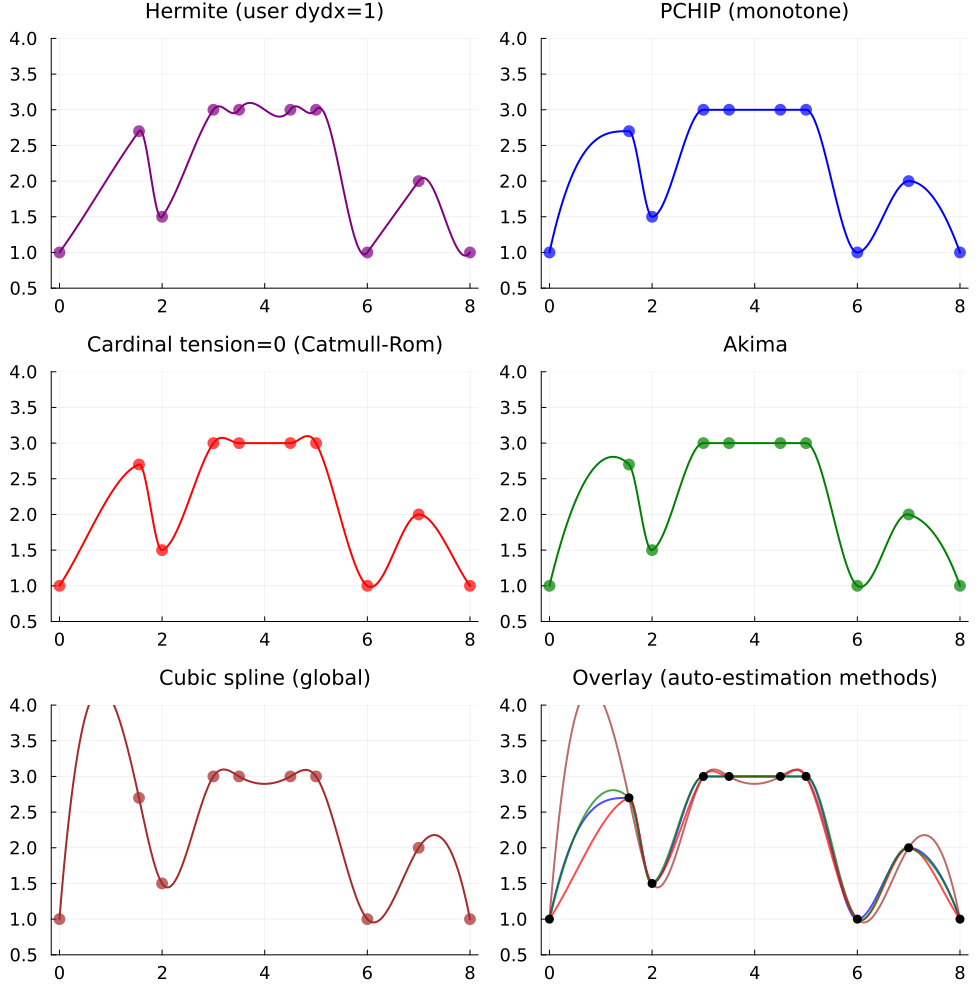

Local Cubic Hermite Interpolation
C¹-continuous piecewise cubic interpolation where each cell's slopes are determined locally — either supplied directly by the user or estimated from a small window of neighbor points. All methods on this page share the same cubic Hermite basis kernel and differ only in how the slopes at the grid points are computed.
Key contrast with Cubic global splines: a global cubic spline solves a tridiagonal system over the entire grid to achieve C² continuity, so one changed data point perturbs the entire curve. Local Hermite methods compute slopes from a 3- or 5-point stencil, so edits are localized, the build is O(n) with no solve, and interpolation is O(1) per cell — no global coupling.
Four Slope Strategies
All four variants evaluate through the same cubic Hermite basis and differ only in how the slope dydx at each grid point is determined:
| Function | Slope source | Stencil | Key property |
|---|---|---|---|
hermite_interp(x, y, dydx, ...) | user-supplied vector | — | Full user control |
pchip_interp(x, y, ...) | Fritsch-Carlson (1980) | 3 points | Monotone-preserving — no overshoot on monotone data |
cardinal_interp(x, y, ...; tension) | cardinal / Catmull-Rom | 3 points | tension=0 → smoothest, tension→1 → straight lines |
akima_interp(x, y, ...) | Akima (1970) | 5 points | Outlier-robust — down-weights deviant secants |
👉 See Local Cubic Hermite API for the complete function reference.
Usage
using FastInterpolations
x = range(0.0, 2π, 15)
y = sin.(x)
# ── PCHIP: automatic monotone-preserving slopes ──
pchip_interp(x, y, 1.0) # one-shot scalar
pchip_interp(x, y, [0.5, 1.5, 2.5]) # one-shot vector
itp = pchip_interp(x, y); itp(1.0) # reusable interpolant
# ── Cardinal / Catmull-Rom with tension parameter ──
cardinal_interp(x, y, 1.0) # default tension=0 (Catmull-Rom)
cardinal_interp(x, y, 1.0; tension=0.5) # tighter (less overshoot)
cardinal_interp(x, y, 1.0; tension=1.0) # straight-line limit
# ── Akima: robust to outliers ──
akima_interp(x, y, 1.0)
itp = akima_interp(x, y); itp(1.0)
# ── Hermite: bring-your-own slopes ──
dydx = cos.(x) # exact analytical slopes
hermite_interp(x, y, dydx, 1.0) # Hermite interpolation with user-supplied dydx
itp = hermite_interp(x, y, dydx); itp(1.0)
# ── Derivatives (all variants support `deriv` kwarg) ──
pchip_interp(x, y, 1.0; deriv=DerivOp(1)) # first derivative (continuous)
akima_interp(x, y, 1.0; deriv=DerivOp(2)) # second derivative (piecewise linear)
# ── In-place evaluation (zero allocation) ──
xq = range(0.1, 2π - 0.1, 200)
out = similar(xq)
pchip_interp!(out, x, y, xq)Coefficient strategy: PreCompute() vs OnTheFly()
Local Hermite interpolants accept a coeffs keyword that controls whether slopes are computed once at construction or recomputed lazily per query:
# PreCompute (default for persistent interpolant): slopes stored in `itp.dy`
itp = pchip_interp(x, y; coeffs=PreCompute())
# OnTheFly: slopes recomputed per cell from the local stencil — zero heap storage
itp = pchip_interp(x, y; coeffs=OnTheFly())
# AutoCoeffs (default): picks PreCompute for interpolants, OnTheFly for scalar one-shots
itp = pchip_interp(x, y)Both strategies produce numerically identical results (to within ~1-2 ULPs of SSA-order drift) and both support integrate, cumulative_integrate, and cumulative_integrate!. OnTheFly() is preferred when memory is tight or when evaluating a single query against a freshly-built interpolant; PreCompute() is preferred for repeated queries against a long-lived interpolant.
Visual Comparison
A small synthetic dataset combining a wavy region, a flat-top plateau, and another wavy region exposes every characteristic behavior of the local Hermite family on a single plot: monotone preservation on the plateau, overshoot control at the local extrema, and the contrast with the global cubic spline.
using FastInterpolations
# 10-point synthetic dataset: wavy → flat-top plateau → wavy
x = [0, 1.55, 2, 3, 3.5, 4.5, 5, 6, 7, 8]
y = [1.0, 2.7, 1.5, 3.0, 3.0, 3.0, 3.0, 1.0, 2.0, 1.0]
dydx_user = ones(length(x))
itp_hermite = hermite_interp(x, y, dydx_user)
itp_pchip = pchip_interp(x, y)
itp_cardinal = cardinal_interp(x, y; tension = 0.0)
itp_akima = akima_interp(x, y)
itp_cubic = cubic_interp(x, y)
# For a single curve, `plot(itp_pchip)` is enough — the recipe handles
# sampling, data scatter, and axes. The subplot layout below is just six
# copies of that one-liner with a shared style.
- Hermite (user
dydx=1) — you set the slopes. Here+1is forced at every grid point, so descending cells show visible dips where the curve fights the data trend. - PCHIP — flat-top stays exactly flat and valleys are clamped. Monotonicity-preserving, zero overshoot.
- Cardinal
tension=0(Catmull-Rom) — central-difference slopes cause small overshoots at plateau edges and local extrema. Highertensionpulls the curve tighter to the data. - Akima — 5-point weighted-average stencil. Matches PCHIP on the plateau but gives smoother transitions through the wavy sections.
- Cubic spline (global) — maximum smoothness (C²), but the global tridiagonal solve propagates slopes non-locally and produces visible wiggle above the plateau. Shown here as the contrast case.
When to Use Local Hermite vs Global Cubic Spline
| Situation | Recommended |
|---|---|
| Monotone data that must stay monotone (CDFs, physical bounds) | pchip_interp |
| Noisy data with occasional outliers | akima_interp |
| Animation keyframes, spline curves through control points | cardinal_interp (tune tension to taste) |
| You already have analytical or measured slopes | hermite_interp |
| Maximum smoothness (C² continuity) required | cubic_interp |
| Edits to a single data point should not ripple globally | Any local Hermite variant |
| Memory is tight / interpolant is disposable | Any variant with coeffs=OnTheFly() |